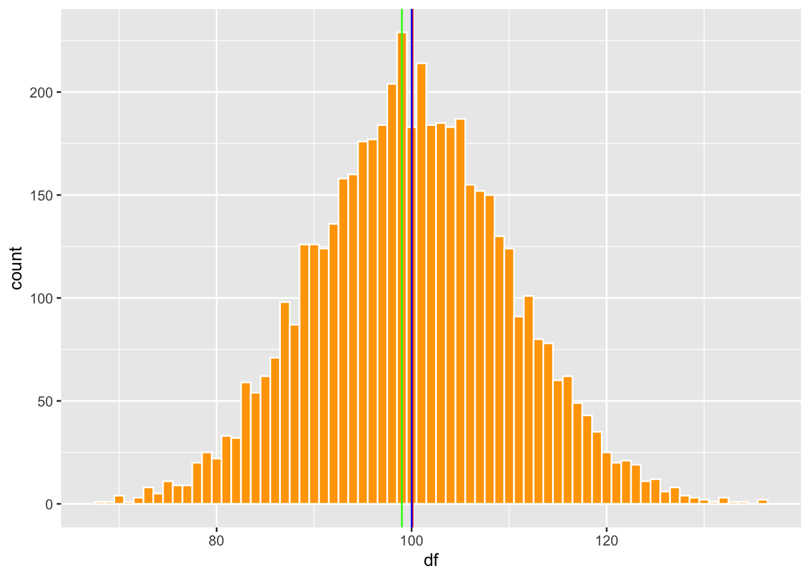
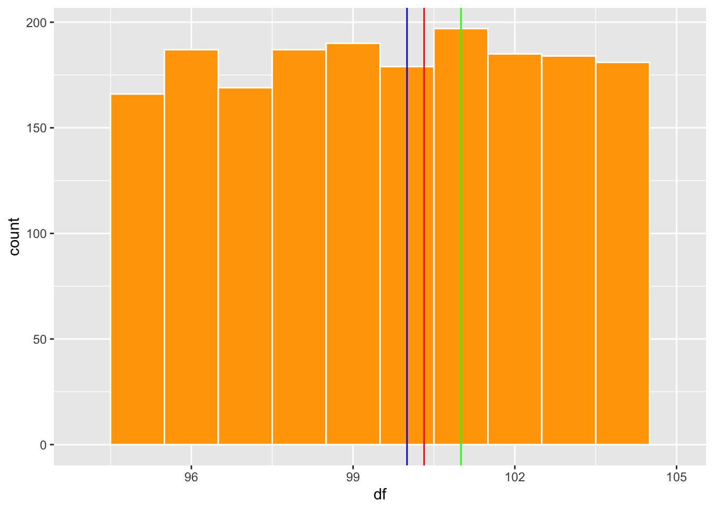
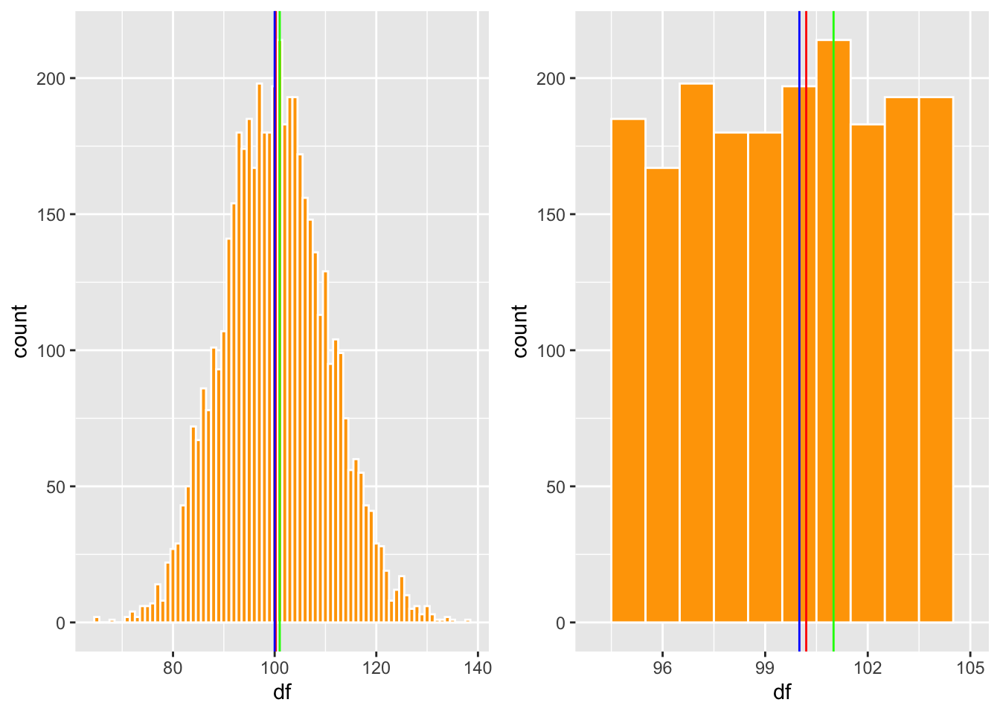
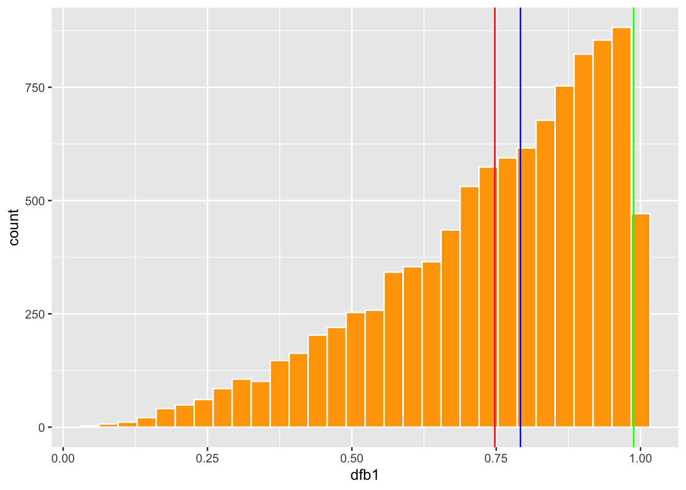
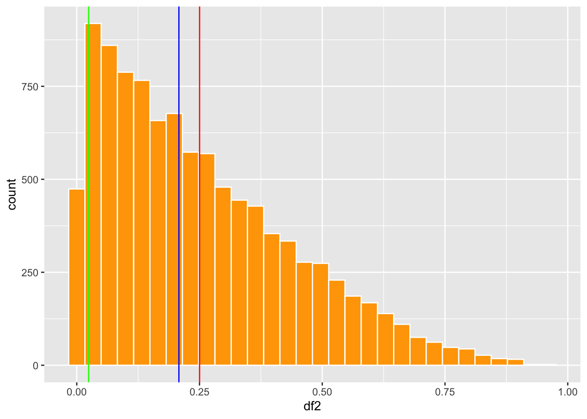
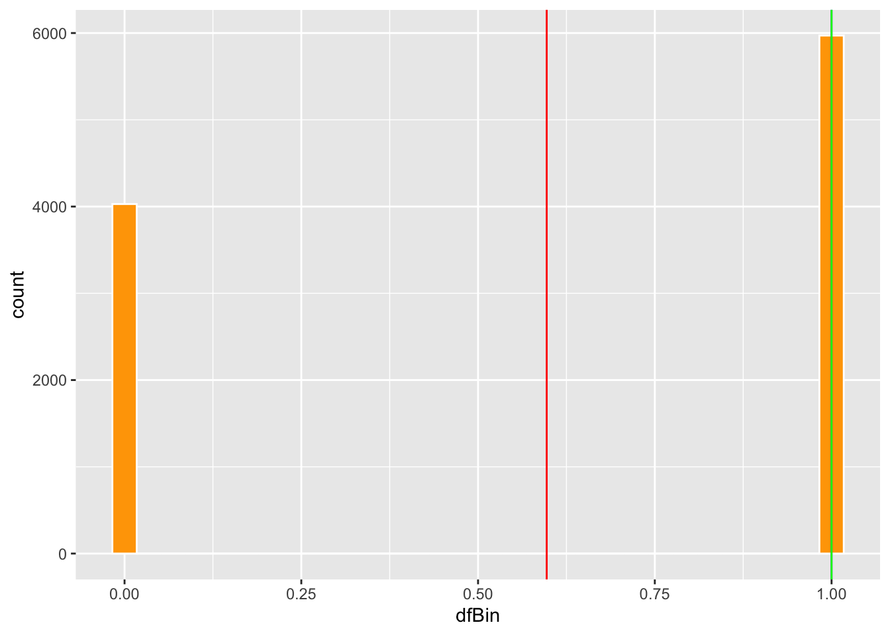

Chapter 6 Medida de tendencia central
La medidas de tendencia central se llaman así, porque el valor indica la distribución de los datos y los indices tiende a estar en el centro de la distribución. Hay por lo menos 16 tipos de medidas de tendencias centrales https://en.wikipedia.org/wiki/Central_tendency. En este curso estaremos solamente mencionado 3 de estas medidas.
- El promedio a arithmetico
- La mediana
- La moda
6.1 Calculando el promedio
Aquí creamos una lista de datos con la función c( ) y con la función mean podemos calcular el promedio. El promedio es la suma de los valores divido por la cantidad de valores en la lista.
\[\bar{x}=\frac{\sum_{i=1}^{n}x_i}n\]
## [1] 56.2 Cuando el promedio no esta localizado en el centro
Digamos que yo tengo la cantidad de semillas producida por 11 plantas, la primera no produjo semillas, la segunda 2 semillas y subsiguientemente hasta la ultima que tuvo una producción de 1000 semillas. Nota que en este caso el promedio no se encuentra el el centro de los datos, por consecuencia NO es un buen indicador de la tendencia central de los datos. Cuando esto ocurre uno no debería usar el promedio para describir la tendencia central de los datos.
## [1] 95## [1] 956.4 Con n impares
Cuando el promedio no es indice adecuado de la tendencia central tenemos dos alternativas, la mediana y la moda. La mediana es el valor en el centro después de haber organizado los datos del más pequeño al más grande.
\[Mediana\ =\frac{\left({x}_{n+1}\right)^{th}}{2}\] Donde n es la cantidad de valores en orden del más pequeño al grande. Por consecuencia se selecciona el valor en el centro de todos los valores. Lo que la función de mediana hace es poner los valores en orden y después determina cual es el valor en el centro. Aquí para demostrar los que hace la función 1) creo un una lista de valores, 2) pongo los datos en orden 3) y mirando los valores en orden vemos que el valor 6 es el valor en el centro. Pero este paso no es necesario ya que la función median lo hace automaticamente.
## [1] 0 1 2 3 4 5 6 7 23 24 26 247
## [13] 43626## [1] 13## [1] 6## [1] 3382.615## [1] 50009.5## [1] 50000.56.5 Ejemplo # 2 de mediana
## [1] 1 2 3 4 5 6 7 8 9 10 11 12 13 14 15 16 17 18
## [19] 19 20 21 22 23 24 25 26 27 28 29 30 31 32 33 34 35 36
## [37] 37 38 39 40 41 42 43 44 45 46 47 48 49 50 51 52 53 54
## [55] 55 56 57 58 59 60 61 62 63 64 65 66 67 68 69 70 71 72
## [73] 73 74 75 76 77 78 79 80 81 82 83 84 85 86 87 88 89 90
## [91] 91 92 93 94 95 96 97 98 99 100## [1] 50.5## [1] 4.35 13.00 19.00 28.20 37.00 46.00## [1] 23.66.6 Con n pares
Cuando hay una cantidad de datos pares, los dos valores en el centro son sumado y el promedio es calculado.
\[Mediana\ =\frac{1}{2}* (\frac{\left({x}_{n+1}\right)^{th}}{2}+\frac{\left({x}_{n+1}\right)^{th}}{2})\] En el siguiente caso tanto el valor de 6 y 7 se encuentra en el centro, por consecuencia la mediana es el promedio de estos valores.
## [1] 0 1 2 3 4 5 6 7 7 23 24 26
## [13] 247 43626## [1] 6.56.7 La moda
La moda es el valor más común. Parta encontrar la moda, correr una función ya que no existe ningun paquete que tiene esa alternativa.
Code
Ya pueden ahora usar la mode para encontrar la moda del conjunto de datos. Lo que vemos es que el valor de 7 es el más comun en la lista de datos.
## [1] 7## [1] 26.8 Cuando es que el promedio, mediana y moda son iguales?
Los tres valores de tendencia central son iguales cuando la distribución es normal, conocida también como en forma de campana. Aquí preparo un lista de datos con distribución normal, y evaluamos donde están los tres valores de tendencia central. Se usa la función rpois, para crear un conjunto de datos al azar con 100000, datos, un promedio de 100.
## [1] 95 107 102 108 92 105 96 97 96 104 102 102 92 113 100 110 94 109
## [19] 92 103 108 103 120 84 116 123 105 78 118 98 108 98 109 109 92 100
## [37] 111 106 92 90 92 95 92 86 93 109 106 101 89 100 100 88 69 92
## [55] 90 107 114 96 100 118 82 99 101 100 101 93 90 111 93 105 107 107
## [73] 92 98 74 95 76 111 93 83 108 95 108 92 114 120 96 103 103 91
## [91] 110 108 79 104 112 108 110 95 92 104 122 97 93 101 102 87 107 108
## [109] 101 99 103 91 93 109 110 103 97 84 97 102 87 100 86 130 97 104
## [127] 103 86 93 104 92 111 104 107 112 102 94 97 90 105 105 102 111 90
## [145] 105 101 130 107 106 100 100 95 110 73 109 97 104 115 115 118 75 100
## [163] 88 101 96 105 105 94 109 100 109 110 105 87 115 101 104 96 104 119
## [181] 94 110 92 116 120 105 100 100 95 86 99 97 111 91 93 85 101 107
## [199] 93 99 98 112 109 99 105 108 114 105 119 100 89 123 106 102 86 112
## [217] 102 104 102 101 96 90 98 99 103 100 113 98 118 94 105 110 86 94
## [235] 90 124 104 92 119 105 89 99 109 101 105 114 111 99 105 123 99 105
## [253] 108 89 84 94 104 93 79 101 97 91 103 100 82 98 96 89 101 101
## [271] 104 98 109 80 106 94 98 96 101 91 105 91 89 98 99 99 92 108
## [289] 83 97 102 101 96 103 103 108 116 111 101 96 80 100 109 95 125 109
## [307] 104 99 91 99 99 88 87 107 97 93 93 110 83 113 87 87 109 119
## [325] 90 103 119 109 116 86 94 88 109 106 116 103 91 99 93 106 115 92
## [343] 94 109 114 110 103 92 103 105 117 99 113 90 91 117 93 95 101 95
## [361] 100 105 91 91 105 100 87 109 109 104 115 95 108 81 113 91 100 102
## [379] 98 114 88 98 95 98 113 106 100 102 102 97 106 100 104 105 105 105
## [397] 92 114 105 101 89 119 104 96 99 100 116 94 108 89 103 105 95 96
## [415] 88 80 103 103 97 102 93 94 108 91 112 112 98 95 97 106 101 90
## [433] 101 95 104 112 111 90 106 96 85 110 127 91 109 81 79 110 110 107
## [451] 81 96 92 105 83 115 98 110 101 100 101 108 95 96 105 99 121 108
## [469] 102 102 93 98 108 103 108 112 104 94 88 93 101 96 103 104 95 78
## [487] 89 105 114 92 108 96 102 119 124 94 104 92 107 93 95 81 98 98
## [505] 117 91 86 115 101 93 104 95 110 104 95 114 99 108 99 115 108 90
## [523] 103 104 99 90 103 102 105 106 89 107 119 85 100 92 104 96 95 96
## [541] 87 102 86 93 111 101 102 114 109 105 92 103 92 106 132 102 87 77
## [559] 110 90 94 93 102 90 106 91 87 104 88 109 107 90 102 107 104 109
## [577] 104 92 105 98 106 118 93 87 116 87 102 103 98 100 99 111 93 106
## [595] 96 94 97 115 115 98 99 99 113 107 88 98 106 95 105 117 112 98
## [613] 88 93 107 102 105 91 87 94 91 98 91 108 109 106 87 82 97 91
## [631] 100 70 127 108 100 103 93 73 112 93 81 73 76 109 103 88 107 94
## [649] 98 102 98 122 104 133 106 108 109 88 100 93 96 92 91 88 88 111
## [667] 101 99 100 107 75 107 97 116 108 79 92 96 83 81 94 119 101 108
## [685] 99 106 93 99 99 98 103 105 97 112 113 109 93 116 105 109 107 89
## [703] 87 110 99 87 93 87 91 87 103 97 97 124 97 109 100 89 104 96
## [721] 111 109 115 92 101 99 80 107 95 114 107 97 94 96 95 90 105 93
## [739] 90 95 97 95 98 127 98 94 110 106 88 100 112 90 107 122 95 99
## [757] 95 103 91 101 116 94 95 83 94 122 99 110 89 105 91 94 114 92
## [775] 90 103 102 106 118 113 84 116 112 104 103 86 106 95 108 107 95 94
## [793] 125 118 96 82 86 105 104 116 87 97 96 95 98 104 112 101 98 101
## [811] 84 102 85 90 98 107 105 102 91 117 84 104 101 99 83 94 110 104
## [829] 97 92 90 108 101 107 101 100 83 110 97 96 103 96 117 104 89 91
## [847] 83 103 104 103 79 113 125 99 106 95 111 111 93 93 103 106 95 84
## [865] 90 75 105 93 101 81 106 107 97 108 106 112 102 110 100 95 107 99
## [883] 107 109 95 85 115 109 116 103 106 98 94 111 101 116 100 91 105 109
## [901] 91 103 96 93 112 92 118 105 99 89 112 116 105 110 89 102 109 117
## [919] 100 94 89 81 106 104 86 94 113 94 105 101 110 94 99 110 78 81
## [937] 97 92 99 98 97 105 102 125 110 107 83 101 107 89 89 103 107 108
## [955] 104 115 111 96 99 96 103 110 97 102 113 96 84 105 93 91 97 110
## [973] 98 96 99 109 99 96 105 102 96 98 94 111 88 112 88 101 107 94
## [991] 98 98 102 112 97 114 108 95 106 110 101 95 89 98 100 107 100 112
## [1009] 101 98 113 99 83 93 89 103 98 106 101 101 105 115 103 103 103 95
## [1027] 99 89 96 101 98 93 78 86 84 98 92 111 99 83 87 95 96 92
## [1045] 118 98 94 94 89 99 99 115 94 108 102 103 92 105 98 124 85 105
## [1063] 103 114 107 92 101 90 105 88 93 103 108 98 99 97 112 90 103 120
## [1081] 108 89 110 103 98 104 96 93 94 101 83 123 92 96 100 90 108 90
## [1099] 97 107 96 95 93 101 98 97 108 115 102 102 95 90 88 87 88 112
## [1117] 115 83 90 102 113 94 87 102 113 105 92 96 104 87 104 120 101 104
## [1135] 119 92 117 96 112 113 102 101 87 114 94 101 104 93 89 102 117 92
## [1153] 113 103 103 108 99 93 88 98 110 114 105 122 90 107 110 96 101 105
## [1171] 105 82 101 99 104 106 84 100 92 102 90 99 99 91 102 101 85 107
## [1189] 109 107 93 102 112 99 97 83 100 108 102 119 92 110 88 104 97 94
## [1207] 132 115 109 121 103 106 99 76 86 125 99 89 88 95 134 101 92 104
## [1225] 106 104 101 126 98 92 91 89 103 89 91 78 105 89 84 97 111 103
## [1243] 99 104 97 98 100 92 85 97 99 84 104 106 104 124 90 112 84 87
## [1261] 116 91 121 99 113 102 88 94 102 87 90 103 87 110 114 99 110 79
## [1279] 104 94 92 98 114 100 100 121 116 95 109 109 101 104 89 89 90 103
## [1297] 101 86 101 122 108 106 93 101 112 89 97 122 95 89 97 87 90 94
## [1315] 108 94 96 91 101 89 84 85 103 100 105 114 105 121 87 107 105 100
## [1333] 79 97 95 97 95 101 118 107 86 98 93 98 99 94 101 105 97 95
## [1351] 88 98 97 96 95 87 93 96 103 99 99 94 93 101 86 99 102 90
## [1369] 105 87 97 89 81 99 112 81 88 107 102 101 103 100 114 97 98 99
## [1387] 110 102 95 100 92 91 111 115 102 99 99 97 107 103 83 104 98 117
## [1405] 91 99 93 103 98 78 100 105 97 107 102 110 107 103 116 108 115 96
## [1423] 88 97 96 100 120 106 83 95 106 106 107 84 104 97 77 105 98 84
## [1441] 102 115 79 86 110 107 97 106 82 85 84 84 102 109 111 110 79 99
## [1459] 99 91 99 105 92 102 104 96 104 122 87 106 103 113 81 108 105 93
## [1477] 104 120 104 91 107 99 112 89 99 108 95 112 109 110 88 91 78 104
## [1495] 90 96 112 98 76 89 98 101 102 92 112 115 90 100 102 96 101 123
## [1513] 109 96 79 87 111 92 104 80 115 87 108 106 90 99 103 98 116 104
## [1531] 98 101 97 100 102 110 114 102 83 92 102 94 86 98 104 101 98 83
## [1549] 92 93 93 83 99 92 98 110 105 104 93 111 102 111 106 92 109 106
## [1567] 93 104 101 91 105 98 126 102 116 110 106 92 100 104 104 106 88 85
## [1585] 110 109 97 105 87 86 113 85 112 112 88 111 115 111 112 111 114 81
## [1603] 104 88 101 88 113 93 97 109 116 113 85 101 106 105 92 107 105 96
## [1621] 112 109 104 76 101 86 103 95 111 86 103 114 91 99 89 101 111 96
## [1639] 104 90 101 94 80 94 93 103 85 110 101 96 104 100 100 116 99 92
## [1657] 99 99 108 102 104 92 103 87 113 100 103 107 102 101 99 101 112 110
## [1675] 82 105 102 90 87 94 101 99 96 108 97 99 90 106 86 99 100 102
## [1693] 109 102 105 98 100 97 93 106 101 108 95 104 109 112 113 118 114 93
## [1711] 96 104 88 96 114 115 112 93 103 91 91 78 86 89 98 106 91 93
## [1729] 106 101 90 98 117 106 103 110 108 95 95 81 73 82 86 103 98 95
## [1747] 99 121 99 93 99 109 91 111 94 100 118 104 100 104 91 115 96 96
## [1765] 89 96 107 98 116 93 92 81 84 105 122 85 106 109 90 107 115 98
## [1783] 90 103 94 93 102 80 104 109 110 108 107 95 95 106 89 95 112 111
## [1801] 116 106 96 110 110 106 113 114 93 96 89 104 107 102 92 101 86 101
## [1819] 106 89 96 105 109 89 85 112 99 93 106 93 98 96 109 109 86 102
## [1837] 100 114 99 112 79 105 105 99 93 93 78 90 98 122 90 102 102 90
## [1855] 101 108 70 102 109 71 114 108 93 110 99 74 79 88 98 109 117 96
## [1873] 83 93 91 92 107 106 95 106 107 92 94 103 91 111 92 98 83 99
## [1891] 85 102 103 121 106 100 101 107 94 106 108 111 96 117 85 111 93 83
## [1909] 100 110 118 101 103 105 119 110 86 112 98 94 99 97 104 105 116 105
## [1927] 88 114 96 97 101 102 99 93 96 107 90 118 89 87 109 88 87 111
## [1945] 97 70 99 104 82 91 96 83 127 94 106 89 105 105 102 104 123 118
## [1963] 101 119 98 93 103 106 117 101 123 93 107 106 103 113 111 106 101 104
## [1981] 101 93 91 91 114 109 112 107 88 111 111 106 110 103 102 111 99 101
## [1999] 104 119 95 90 110 106 120 91 94 87 85 95 113 89 114 91 94 109
## [2017] 97 91 104 110 96 102 82 73 104 93 87 86 100 91 100 88 105 94
## [2035] 110 101 114 112 103 90 107 107 107 105 111 86 104 99 92 97 104 103
## [2053] 97 94 101 94 105 97 98 108 109 91 97 89 115 107 106 87 115 109
## [2071] 100 108 107 107 96 106 95 98 112 112 103 100 123 85 114 97 78 90
## [2089] 97 100 106 112 110 108 103 93 89 107 85 90 104 106 103 89 118 113
## [2107] 99 110 107 101 88 99 92 92 87 85 110 92 95 89 89 99 89 85
## [2125] 104 99 104 82 97 106 115 115 108 94 91 108 106 107 102 99 100 77
## [2143] 108 117 104 110 117 115 93 93 102 106 91 114 92 118 91 105 96 102
## [2161] 99 111 86 104 114 78 98 99 94 113 78 88 94 108 110 97 101 102
## [2179] 94 113 109 107 111 115 106 105 107 98 80 92 105 125 99 98 87 102
## [2197] 120 100 104 96 93 108 108 92 105 85 96 97 114 95 116 92 92 107
## [2215] 99 80 93 116 85 121 117 114 92 90 99 118 118 98 107 97 103 104
## [2233] 83 90 85 99 105 101 99 90 88 90 90 94 91 111 92 113 109 111
## [2251] 105 104 112 99 87 90 107 95 96 100 90 86 106 106 81 85 98 91
## [2269] 100 111 84 105 101 97 108 111 96 84 108 126 98 119 95 119 97 110
## [2287] 97 107 83 94 103 106 100 98 114 100 119 101 91 97 99 95 113 96
## [2305] 97 97 110 101 100 114 112 108 95 81 110 101 91 97 109 86 118 93
## [2323] 101 83 81 99 100 103 81 112 103 97 89 103 111 103 99 103 99 92
## [2341] 84 87 111 103 98 90 94 80 95 97 93 92 92 99 107 85 122 117
## [2359] 98 121 105 100 97 98 125 91 104 101 94 98 115 97 93 81 111 104
## [2377] 100 104 110 102 107 98 102 112 87 116 108 92 117 117 75 108 101 101
## [2395] 89 96 99 91 89 111 89 120 84 102 119 89 111 97 109 105 88 91
## [2413] 110 96 93 102 94 107 84 106 108 92 92 112 105 88 106 103 98 99
## [2431] 119 98 96 84 112 103 99 100 116 100 96 101 113 109 107 105 96 105
## [2449] 109 74 100 91 113 107 98 100 97 90 125 93 97 108 106 92 121 86
## [2467] 98 99 96 113 105 106 98 106 103 97 92 107 95 109 102 75 91 96
## [2485] 108 107 114 106 119 94 102 89 94 108 100 109 106 106 98 105 116 103
## [2503] 116 74 113 112 88 88 103 95 118 72 110 94 101 97 105 86 88 99
## [2521] 102 123 105 98 82 104 83 108 112 90 98 93 98 92 103 117 86 109
## [2539] 95 91 114 116 98 90 103 92 112 101 102 91 122 82 101 102 116 89
## [2557] 96 98 103 119 101 99 103 115 112 113 76 95 92 104 87 95 87 93
## [2575] 103 96 108 97 95 95 113 105 98 88 83 95 104 97 93 91 91 91
## [2593] 104 97 101 102 113 83 88 100 91 103 104 85 99 93 101 120 108 107
## [2611] 104 117 109 103 108 103 98 107 100 97 80 94 107 98 106 99 105 111
## [2629] 107 79 115 103 97 136 94 106 106 99 97 96 97 105 79 98 94 98
## [2647] 118 121 115 96 92 115 105 101 90 97 102 128 89 109 99 104 86 91
## [2665] 95 103 86 102 95 97 110 100 105 89 90 90 98 99 85 116 93 94
## [2683] 94 87 92 99 100 90 116 81 96 98 101 95 112 96 120 109 100 109
## [2701] 100 92 112 99 105 98 92 105 102 93 108 100 108 94 90 103 95 100
## [2719] 101 95 87 88 118 88 118 101 104 107 82 108 121 97 112 122 106 102
## [2737] 99 102 103 95 85 103 107 111 99 92 103 79 95 112 104 92 98 112
## [2755] 84 99 107 87 96 94 103 84 96 103 89 89 104 132 93 118 99 98
## [2773] 86 105 105 84 94 106 106 94 96 81 109 105 90 104 102 106 117 94
## [2791] 80 103 97 100 96 101 101 122 121 105 112 94 99 97 110 90 103 92
## [2809] 103 87 78 93 98 106 105 107 98 106 94 111 84 77 93 95 84 90
## [2827] 105 91 98 103 96 88 101 107 98 90 101 109 83 86 84 97 122 106
## [2845] 116 105 93 79 104 113 99 93 105 90 107 106 94 95 109 96 122 107
## [2863] 101 108 100 103 111 105 93 110 116 112 112 111 97 91 91 109 104 83
## [2881] 112 98 108 102 117 102 91 96 102 116 118 84 96 109 97 106 95 82
## [2899] 80 118 98 92 92 87 89 108 111 109 96 94 117 110 110 98 102 98
## [2917] 102 91 97 115 95 94 96 109 112 95 105 109 89 94 101 81 99 116
## [2935] 105 94 88 108 98 99 101 105 89 108 104 98 89 92 89 75 88 95
## [2953] 102 98 88 108 79 103 99 103 105 128 98 97 93 101 88 84 81 106
## [2971] 93 116 86 105 105 104 89 109 112 97 117 101 96 110 99 94 108 89
## [2989] 93 116 95 93 117 108 98 77 94 99 89 101 94 80 93 97 106 111
## [3007] 99 116 102 97 113 104 83 100 115 97 83 104 91 90 97 91 99 100
## [3025] 81 85 84 102 112 104 99 103 101 103 112 104 102 95 96 106 105 104
## [3043] 100 94 104 92 87 83 117 98 95 114 90 96 94 111 109 96 117 113
## [3061] 90 85 103 77 102 103 96 90 106 107 95 107 96 95 102 110 98 108
## [3079] 108 104 105 105 89 100 97 110 103 98 89 120 96 115 99 110 104 80
## [3097] 107 123 117 113 95 106 94 108 99 91 89 104 110 98 109 90 109 112
## [3115] 115 101 101 102 87 88 98 111 105 114 97 107 103 108 109 97 108 92
## [3133] 95 91 108 100 100 103 114 90 96 95 90 94 98 82 102 98 114 95
## [3151] 100 94 94 104 108 90 112 119 105 111 91 92 101 90 107 101 96 104
## [3169] 89 88 116 101 97 90 109 116 127 99 95 102 102 112 92 125 98 91
## [3187] 81 111 93 109 89 111 90 85 105 90 103 113 101 118 92 102 108 94
## [3205] 102 95 99 98 90 116 114 87 129 89 98 97 115 73 124 103 93 110
## [3223] 106 104 112 82 89 123 113 83 94 118 103 95 85 99 97 103 110 94
## [3241] 91 100 96 117 86 91 90 99 96 94 120 104 91 109 89 102 93 93
## [3259] 106 91 91 107 112 86 100 96 109 98 98 100 96 99 99 83 87 90
## [3277] 103 97 101 79 105 99 99 105 84 90 95 98 99 106 109 96 89 85
## [3295] 90 112 104 111 126 105 110 87 111 103 102 92 93 99 90 111 97 93
## [3313] 114 75 90 115 99 99 83 116 102 93 87 92 107 113 100 89 107 74
## [3331] 104 116 115 98 99 97 88 100 97 97 109 118 99 95 94 98 96 86
## [3349] 100 116 111 129 86 115 91 82 102 102 104 112 96 96 95 106 93 120
## [3367] 110 96 111 104 108 83 97 102 100 107 94 100 108 105 108 102 96 110
## [3385] 96 92 92 93 97 127 90 109 100 98 87 103 114 106 102 100 99 100
## [3403] 101 95 100 97 115 104 102 79 99 111 107 76 106 99 106 100 107 88
## [3421] 116 76 97 86 102 81 107 90 114 98 96 117 98 98 95 103 95 108
## [3439] 86 92 78 106 109 110 96 107 95 107 107 115 104 86 117 94 101 79
## [3457] 105 102 103 112 91 108 92 100 106 82 100 99 82 104 95 98 106 95
## [3475] 93 99 86 105 100 97 89 101 113 92 104 119 94 91 87 96 104 91
## [3493] 120 96 100 97 99 100 107 83 117 99 99 86 105 108 101 107 109 103
## [3511] 87 100 122 95 89 114 92 92 103 72 112 87 91 99 99 90 95 97
## [3529] 104 96 102 112 108 107 94 120 115 113 105 99 92 109 120 85 114 106
## [3547] 100 80 83 99 123 109 95 107 101 84 79 105 86 119 102 107 87 111
## [3565] 90 97 107 95 96 102 96 121 80 101 89 97 105 97 95 90 75 96
## [3583] 98 103 90 84 97 95 94 108 96 90 98 104 98 93 98 97 110 114
## [3601] 101 95 123 81 91 116 98 109 89 102 115 103 99 123 100 101 99 101
## [3619] 93 93 119 87 102 114 100 105 97 106 89 96 102 103 102 99 105 85
## [3637] 100 111 94 114 100 93 114 84 91 82 102 113 101 80 107 101 101 102
## [3655] 117 82 110 111 93 111 94 104 106 100 106 110 98 88 100 118 107 87
## [3673] 108 113 98 86 110 114 100 112 101 109 106 118 117 94 99 106 126 91
## [3691] 100 108 93 99 113 97 78 98 117 93 100 101 82 101 105 86 91 90
## [3709] 93 97 108 114 114 107 101 92 113 107 90 99 99 108 110 97 85 109
## [3727] 107 90 95 117 99 106 103 87 99 106 104 86 94 106 92 94 114 112
## [3745] 89 78 94 97 97 113 91 101 96 101 102 108 102 93 118 123 105 101
## [3763] 100 100 99 98 101 94 87 103 84 97 106 108 114 104 118 87 98 105
## [3781] 102 104 123 94 77 82 83 83 89 87 95 105 109 107 115 97 114 110
## [3799] 100 100 94 104 109 79 112 101 89 100 98 114 109 114 78 96 109 113
## [3817] 112 97 94 95 105 95 104 91 79 90 87 110 95 86 93 103 107 113
## [3835] 96 99 96 79 93 102 94 96 100 99 106 102 92 98 97 95 93 105
## [3853] 100 103 100 98 93 101 88 109 105 91 113 104 113 101 99 91 103 95
## [3871] 95 102 114 131 90 84 87 96 104 101 99 95 95 110 100 95 99 113
## [3889] 112 97 100 98 96 99 123 96 105 89 127 100 102 109 83 88 108 103
## [3907] 94 94 104 102 88 114 94 75 109 101 97 110 93 94 101 92 102 94
## [3925] 93 103 105 93 103 91 96 89 121 87 110 104 101 106 96 103 98 117
## [3943] 93 108 102 108 103 105 82 93 108 97 114 109 93 85 117 99 84 110
## [3961] 105 89 84 100 103 120 88 93 89 98 95 117 97 117 102 98 86 127
## [3979] 85 100 102 101 106 92 87 112 100 83 97 99 101 100 113 101 123 99
## [3997] 107 96 107 104 100 87 95 102 98 110 97 107 82 110 95 92 107 89
## [4015] 88 100 95 85 83 93 97 99 115 85 90 107 111 93 91 104 114 103
## [4033] 95 94 101 108 107 98 80 107 89 98 105 114 116 90 94 100 97 98
## [4051] 96 92 79 100 101 87 98 100 105 110 93 85 101 124 110 86 97 83
## [4069] 106 103 110 99 104 91 102 101 102 109 88 86 99 93 76 96 98 90
## [4087] 94 106 83 92 95 97 83 109 114 123 96 94 81 108 94 101 106 95
## [4105] 106 83 94 92 99 97 103 99 105 89 105 94 101 111 88 113 100 96
## [4123] 95 92 112 85 109 99 102 106 109 85 108 128 117 107 111 108 82 88
## [4141] 96 111 92 96 89 88 84 118 103 120 102 107 100 107 102 93 103 110
## [4159] 99 95 105 116 83 102 95 90 106 97 108 85 98 121 93 99 118 110
## [4177] 110 100 88 80 96 96 92 101 105 111 90 105 100 95 98 110 82 88
## [4195] 87 105 99 97 110 102 106 115 93 96 94 116 94 96 100 110 89 120
## [4213] 112 108 97 105 107 115 91 110 108 99 101 106 91 105 85 99 94 124
## [4231] 122 99 102 98 101 101 107 108 100 107 104 97 98 89 87 92 104 95
## [4249] 106 86 95 99 73 110 92 101 100 94 113 107 92 104 89 114 113 97
## [4267] 92 89 94 108 95 81 108 104 84 97 104 93 96 100 116 97 109 110
## [4285] 90 118 102 99 95 103 103 112 78 96 106 86 108 97 85 105 113 85
## [4303] 92 99 82 101 97 99 107 94 102 99 101 94 119 100 90 83 103 97
## [4321] 101 112 101 94 95 89 95 93 93 122 98 105 89 107 97 112 105 102
## [4339] 101 106 105 102 84 106 100 101 100 119 108 108 101 110 94 104 89 95
## [4357] 95 91 119 97 88 89 121 105 115 117 99 103 100 99 100 114 109 100
## [4375] 87 112 92 88 101 95 87 106 103 98 86 97 99 124 109 104 82 95
## [4393] 101 113 100 104 100 107 101 90 125 94 97 118 114 90 101 93 114 93
## [4411] 109 95 101 100 116 104 94 89 103 99 99 81 110 129 104 102 101 86
## [4429] 103 85 91 105 94 97 101 101 111 98 116 96 98 118 100 122 111 108
## [4447] 85 95 88 93 114 92 92 98 107 113 121 92 116 94 102 95 105 99
## [4465] 117 99 124 75 111 89 101 108 88 119 89 110 97 104 111 96 88 89
## [4483] 91 102 100 105 84 121 87 95 98 89 101 114 117 95 95 93 103 102
## [4501] 101 103 121 104 91 108 100 68 87 105 101 98 119 89 82 109 109 98
## [4519] 88 113 89 126 103 89 118 88 100 101 106 103 91 94 89 95 103 122
## [4537] 89 98 98 116 87 105 98 96 89 90 97 106 108 119 113 110 96 101
## [4555] 100 120 103 87 108 106 104 83 93 104 102 102 102 95 91 98 107 108
## [4573] 99 119 99 95 93 96 107 100 103 97 92 107 87 108 113 94 86 94
## [4591] 93 108 98 113 95 97 109 101 95 90 120 80 83 104 105 104 108 115
## [4609] 112 119 86 99 103 104 104 109 108 88 105 100 97 101 101 102 100 101
## [4627] 102 99 119 82 87 101 101 110 87 102 87 87 102 93 91 107 119 104
## [4645] 100 97 112 88 93 102 112 113 77 120 102 105 101 100 108 75 106 97
## [4663] 98 98 85 94 94 104 96 102 103 97 89 99 90 101 107 103 108 94
## [4681] 96 102 109 101 93 103 86 105 95 100 106 95 108 90 107 115 102 86
## [4699] 96 104 107 94 88 92 107 99 108 83 136 103 88 105 96 113 99 107
## [4717] 110 102 113 101 98 120 116 96 87 94 108 108 96 98 109 83 113 78
## [4735] 88 84 106 97 113 104 103 89 72 99 94 99 90 99 91 99 117 100
## [4753] 108 112 113 113 93 110 112 105 108 95 104 89 103 85 111 98 103 103
## [4771] 89 103 105 106 99 104 124 86 105 86 105 125 97 96 81 83 94 96
## [4789] 109 110 93 85 100 91 94 118 103 91 110 104 97 109 108 94 111 109
## [4807] 101 106 84 85 95 78 98 93 86 100 108 91 90 109 95 109 118 95
## [4825] 105 103 112 90 87 100 108 98 87 94 92 110 98 106 104 90 99 97
## [4843] 107 73 111 88 106 89 87 111 90 100 104 95 108 115 91 111 88 95
## [4861] 91 98 107 96 94 96 85 112 114 98 114 112 106 88 85 99 112 97
## [4879] 98 93 110 102 99 86 101 103 91 106 113 105 113 107 106 104 85 90
## [4897] 101 94 106 109 85 104 89 116 111 95 111 91 108 95 85 84 90 84
## [4915] 110 105 85 104 104 80 116 110 97 103 84 96 110 95 114 101 109 108
## [4933] 111 101 98 116 106 113 115 104 97 87 70 99 87 93 89 96 110 90
## [4951] 102 96 101 107 96 98 118 88 92 83 101 84 113 98 102 96 96 86
## [4969] 125 102 83 103 100 117 89 105 101 84 128 117 87 87 104 77 98 89
## [4987] 84 105 99 99 98 98 92 95 96 81 115 108 95 105## df
## 1 95
## 2 107
## 3 102
## 4 108
## 5 92
## 6 105Lo que uno observa es que los tres valores son muy cercano uno del otro.
## [1] 100.0894## [1] 100## [1] 99Podemos visualizar estos datos usamos dos gráfico, En el gráfico de la izquierda se ve una distribución normal con las tres lineas (promedio, mediana y moda). En el gráfico de la derecha se observa la misma información pero solamente los valores entre 96 y 101. Se observa que la mediana y el promedio son igual y la moda varia un poco, se encuentra donde la barra es más alta. Se observa que los tres valores son cerca del centro.
## [1] 99Code

Code
library(ggplot2)
b=ggplot(df1, aes(df))+
geom_histogram(fill="orange", colour="white", binwidth = 1)+
geom_vline(aes(xintercept = pro), colour="red")+
geom_vline(aes(xintercept = med), colour="blue")+
geom_vline(aes(xintercept = mod99), colour="green")+
xlim(94,105)+
theme(legend.position = "none")
b

6.9 Distribución cuando los tres valores de tendencia centrtal no son iguales.
En estas distribuciones uno observa que hay exceso de vaslores pequeños o grande. Esto resulta en que los tres indices de tendencias centrales no se encuentra cerca uno del otro.
Code
- ¿Cual es la linea de promedio, moda y mediana en cada gráfico?
Code
mea=mean(dfb1$dfb1)
med=median(dfb1$dfb1)
mod=statip::mfv1(dfb1$dfb1)
meab=mean(df2$df2)
medb=median(df2$df2)
modb=statip::mfv1(df2$df2)
SesgadoDerecho=ggplot(dfb1, aes(dfb1))+
geom_histogram(fill="orange", colour="white")+
geom_vline(aes(xintercept = mea), colour="red")+
geom_vline(aes(xintercept = med), colour="blue")+
geom_vline(aes(xintercept = mod), colour="green")+
theme(legend.position = "none")
SesgadoIzquierda=ggplot(df2, aes(df2))+
geom_histogram(fill="orange", colour="white")+
geom_vline(aes(xintercept = meab), colour="red")+
geom_vline(aes(xintercept = medb), colour="blue")+
geom_vline(aes(xintercept = modb), colour="green")+
theme(legend.position = "none")
SesgadoDerecho

Code
6.10 Variables binomial
En el siguiente ejemplo podemos ver claramente que las medidas de tendencias central no son adecuada.
Primero producimos un conjunto de datos que tiene solamente dos alternativas 0 y 1. Para facilitar los datos e imaginar lo que quiere decir estos datos que cuando es un 0 la persona no tiene hijos y cuando es un 1 tiene hijos.
Code
## dfBin
## 1 1
## 2 1
## 3 1
## 4 0
## 5 1
## 6 1Ahora vamos a producir el gráfico. Lo que uno observa es que el promedio esta en el centro cerca de .6, pero no hay ningún dato cerca del promedio. El promedio no representa la “tendencia central” de la distribución.
## [1] 0.6123Code

6.10.1 Preguntas de practica sobre medidas de tendencias central.
¿Cuando es que el promedio, mediana y moda son iguales?
¿Cual es la moda de esta conjunto de datos?
## [1] 3 5 2 3 6 7 8 9 1- ¿Cual es la mediana de este conjunto de datos? Eso son la cantidad de cursos
## [1] 3 5 2 3 6 7 8 9 1- ¿Cual es la mediana de este conjunto de datos?
## [1] 1 2 3 3 5 6 6 7 8 9- Para describir la medida central de este conjunto de datos, se debería usar el promedio, mediana o moda?
## [1] 1 2 2 3 4 10 100 1000- ¿Cual es la moda de las siguientes datos. Número de hijos que tienen estudiantes universitarios
## [1] 1 0 0 0 0 0 0 0 0 0 1 3